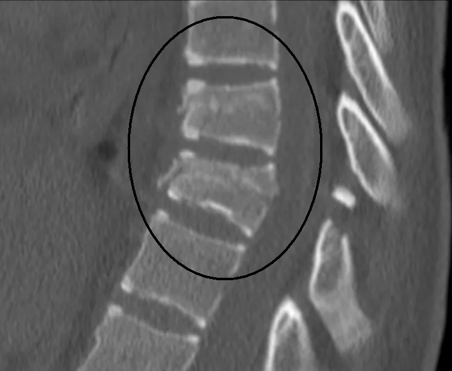
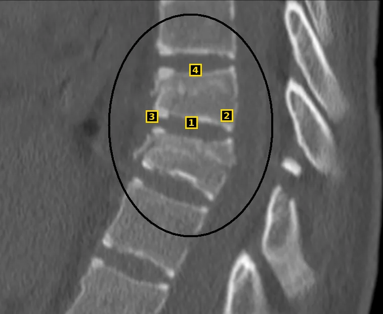

DX.3 — Fracture thoraco-lombaire par flexion-distraction
1. Définition
AO (Arbeitsgemeinschaft für Osteosynthesefragen) définit la flexion-distraction comme l'échec de la bande de tension postérieure, lorsque l'axe du rachis garde son alignement.
Schnake et ses coauteurs écrivent en 2017 que le type B maintient cet alignement sans signe de translation ni de luxationsn17.
Le sous-type B1 (échec osseux d'une seule vertèbre) est la fracture de Chance, car le trait traverse le corps et l'arc postérieursn17.
Le sous-type B2 (bande postérieure osseuse ou ligamentaire) intéresse un segment mobile, donc il réunit 2 corps et leur disquesn17.
Le sous-type B3 (hyperextension de la bande antérieure) sort de cette définition, puisque la flexion n'en est pas le mécanismesn17.
La frontière avec la translation reste dans la définition. Toute translation fait quitter le type Bsn17.
Frontières de la définition
Le type B décrit l'échec de la bande de tension antérieure ou postérieure par distraction, et l'alignement de l'axe reste conservésn17.
Dès que le corps se déplace dans un plan, la même publication range la lésion en type C, parce que tous les éléments ont cédésn17.
Le B1 reste monosegmentaire, tandis que le B2 et le B3 intéressent au moins un segment mobile qui contient 2 vertèbressn17.
Un trait horizontal qui fend une seule vertèbre, de l'épineuse jusqu'au corps, porte donc le nom de fracture de Chancesn17.
La bande postérieure peut céder dans l'os, dans la capsule, dans le ligament, ou dans une combinaison de ces structuressn17.
Cette précision empêche d'appeler fracture une rupture seulement ligamentaire. Le diagnostic gelé reste celui d'une fracture.
2. Épidémiologie
Aucune série suisse lue ne reste chiffrée pour la seule flexion-distraction. Le rang vient d'une cohorte européenne.
Reinhold et ses collègues y comptent 181 lésions en distraction de type B sur 865 patients, soit 20,9 %rein.
Ce pourcentage décrit tout le type B, et non la seule fracture de Chance. Les distractions restent mêlées dans la cohorterein.
Les accidents de la route y représentent 27,1 % des mécanismes, tandis que les chutes banales en représentent 15,8 %rein.
La jonction thoracique basse et lombaire haute rassemble 68,8 % des lésions de cette cohorte, ce qui situe le siège le plus fréquentrein.
La méta-analyse montre une part plus bassekh16.
Son dénominateur reste autre que celui de Reinholdkh16.
| Chiffre | Population | Année | Source |
|---|---|---|---|
| 181 distractions de type B sur 865 patients, soit 20,9 %rein. | La cohorte opératoire germanophone reste un mélange de distractions. Elle n'isole pas la fracture de Chancerein. | L'étude multicentrique est publiée en 2009 dans Unfallchirurgrein. | Reinhold indique aussi 27,1 % d'accidents de la routerein. |
| La part des flexions-distractions y est de 6,96 %, avec un écart de 3,50kh16. | La méta-analyse réunit des séries publiées, et non un registre suissekh16. | L'article est paru en ligne le 21 juillet 2016kh16. | Katsuura sépare cette part du type C, qui y vaut 14,20 %kh16. |
| L'atteinte abdominale associée est de 38,7 %, entre 25,4 % et 52 %kh16. | Quatre études réunissent 270 patients qui ont une flexion-distractionkh16. | L'hétérogénéité de ce sous-groupe, mesurée à 54, reste modéréekh16. | Ce taux ne se confond pas avec les 7,63 % de tout traumatisme thoraco-lombairekh16. |
Deux dénominateurs, deux pourcentages
Katsuura mesure 6,90 % de fractures thoraco-lombaires chez les traumatisés fermés, avec un écart de 3,77kh16.
Dans ce corpus, la flexion-distraction ne représente que 6,96 %, alors que le type C atteint 14,20 %kh16.
Cette cohorte compte 865 patients déjà sélectionnés pour une lésion rachidiennerein.
Le type B y représente 20,9 %rein.
Les deux chiffres peuvent être vrais ensemble, puisqu'ils ne partagent ni le numérateur exact ni le dénominateurreinkh16.
La méta-analyse montre la première vertèbre lombaire en tête, avec 34,40 % des niveaux lésés et un écart de 15,90kh16.
Les collisions y causent 36,70 % des fractures et les chutes de haute énergie 31,70 %, ce qui diffère du recrutement de Reinholdkh16.
L'atteinte abdominale de toute fracture thoraco-lombaire n'y est que de 7,63 %, avec un large écart de 9,74kh16.
Le sous-groupe flexion-distraction monte à 38,7 %, ce qui justifie de chercher le ventre dès que le mécanisme est une ceinturekh16.
Série d'imagerie de 53 fractures de type Chance
Bernstein décrit 53 patients et 55 fractures de type Chance dans un centre de trauma des États-Unis, hors registre suissebern.
Le groupe compte 38 hommes, soit 72 %, et 15 femmes, soit 28 %, avec un âge moyen de 26 ansbern.
Les âges vont de 9 à 54 ans, et la collision est le mécanisme chez 38 patients, soit 72 %bern.
Les chutes représentent 17 % de cette série, tandis que l'atteinte abdominale concerne 40 % des patientsbern.
Vingt et un patients sur 53 ont une lésion intra-abdominale, et la part passe à 43 % si l'on retire les niveaux au-dessus de la douzième thoraciquebern.
Cette série américaine éclaire le cliché, mais elle ne remplace pas la cohorte européenne qui fixe le rangbernrein.
3. Physiopathologie
La base anatomo-fonctionnelle montre le corps, le disque et l'arc postérieur qui forment la bande de tension.
En flexion sur une ceinture abdominale, l'axe de rotation passe devant le rachis, donc l'arc postérieur s'ouvre au lieu de se comprimerbern.
Chance décrit ce fendillement horizontal en 1948, avant que la ceinture ventrale n'en fasse le mécanisme reconnubern.
Le corps peut garder un coin antérieur tassé, cependant le trait horizontal et l'ouverture postérieure signent la distractionsn17.
La corrélation relie chaque rupture à l'examen qui la montre et au geste qui la stabilise.
Si le trait est seulement osseux, l'os peut consolider, tandis qu'une bande ligamentaire rompue ne cicatrise pas de la même façonsn17.

L'illustration d'OpenStax, en couleur, nomme en anglais le corps, l'anneau et le noyau, et l'arc postérieur y est le levier de la bande.
Le foramen intervertébral dessiné rappelle que la racine sort entre les pédicules et qu'un écart du trait peut faire mal.
Bande de tension et disque
Sur la vue latérale, le disque bleu sépare deux corps, et l'arc postérieur forme le bras de levier qui résiste à la flexion.
Quand ce bras cède, les épineuses s'écartent et le mur antérieur peut seulement se tasser.
Sur la vue supérieure, l'anneau reste autour du noyau. Un trait horizontal qui fend le corps passe aussi dans cet anneau si le niveau est discal.
Le B2 peut ainsi traverser le disque plutôt que l'os. La publication l'autorise explicitementsn17.
Le canal osseux n'est pas le siège principal de la lésion, en revanche un fragment peut reculer avec un burst associébern.
Bernstein voit ce composant de burst, avec recul ou flambage du mur postérieur, dans 48 % de sa sériebern.
Perturbation, exploration, geste
| Perturbation | Ce qui la montre | Ce qui la corrige |
|---|---|---|
| L'arc postérieur s'ouvre en distraction et les épineuses s'écartentsn17. | La palpation cherche l'écart, puis le scanner sagittal montre le trait horizontalbern. | Une lésion instable par flexion-distraction est une indication opératoire absolue dans la revue suisserms05. |
| Le ventre se comprime contre la ceinture pendant que le rachis se distraitbern. | Le scanner abdominal injecté montre l'intestin, le mésentère et les organes pleinsbern. | L'abdomen instable se traite avant la fixation rachidienne. L'hémorragie reste plus rapide que la fixation. |
| Une bande seulement ligamentaire ne porte pas de trait osseuxsn17. | L'imagerie par résonance magnétique (IRM) montre le ligament quand le scanner osseux est pauvrerms05. | La revue suisse indique la lésion ligamentaire pure parmi les indications absolues, hors des dix diagnosticsrms05. |
4. Démarche diagnostique
Le médecin cherche d'abord l'abdomen qui saigne et le déficit neurologique qui progresserms05kh16.
La fracture-luxation, rangée E3 dans la liste gelée, se reconnaît à la translation, tandis que la flexion-distraction garde l'alignementsn17.
Vient ensuite le burst, qui rompt le mur postérieur sans ouvrir la bande de tension. Son mécanisme est la compressionsn17.
La compression à mur antérieur isolé se traite souvent par corset si la cyphose reste sous 20 degrésrms05.
La table des discriminants donne, pour chaque concurrent, le signe qui tranche et la conduite si ce signe est présent.
La lésion ligamentaire pure n'a pas de place parmi les dix, cependant la revue indique cette rupture comme indication opératoire absoluerms05.
Diagnostics qui imitent ou voisinent
| Concurrent | Signe qui tranche | Piège | Conduite si présent |
|---|---|---|---|
| La fracture-luxation est une translation d'un corps par rapport à l'autre dans un plan quelconquesn17. | Le scanner sagittal ou coronal montre le décalage, et l'alignement n'est plus conservésn17. | Un petit décalage sur une seule coupe peut être manqué si les reconstructions manquentbern. | La revue suisse indique la chirurgie pour les fractures-luxations et pour les luxations vertébralesrms05. |
| Le burst rompt le mur postérieur et peut rétrécir le canal, sans échec de la bande de tensionsn17. | Le mur postérieur est interrompu, alors que les épineuses ne s'écartent pas comme dans Chancebern. | Un composant de burst existe dans 48 % des Chance de Bernstein, donc les deux peuvent coexisterbern. | La cyphose au-delà de 20 degrés ou la perte de hauteur au-delà de 50 % indique le burst, non la distraction isoléerms05. |
| Dans la compression simple, le mur postérieur reste continu et l'avant du corps se tasserms05. | La cyphose sous 20 degrés et la perte de hauteur sous 50 % autorisent le corset dans ce seul casrms05. | Appliquer ce seuil à une bande postérieure rompue sous-estime l'instabilitérms05. | Le médecin ne pose pas de corset de Jewett sur une distraction instablerms05. |
| La lésion ligamentaire pure n'a pas de trait osseux et reste hors des dix diagnosticsrms05. | L'IRM montre la rupture ligamentaire quand l'os est intactrms05. | Le nom gelé ne reste pas Chance lorsqu'aucun os ne reste fendu. | Elle demeure une indication opératoire absolue dans la revue de 2005rms05. |
5. Anamnèse ciblée et drapeaux rouges
L'interrogatoire cherche le mécanisme, parce qu'une ceinture ventrale qui retient le bassin explique la distraction postérieurebern.
Le médecin doit demander l'heure du choc, la position dans le véhicule et la douleur abdominale apparue dès l'impactbern.
Il fait décrire la douleur rachidienne et demande si les jambes sont lourdes, insensibles ou incapables de bougerrms05.
Un déficit qui s'aggrave pendant le récit impose le bloc opératoire. La revue en fait une indication absolue lorsqu'une compression neurologique existerms05.
Les drapeaux rouges décident du lieu de soins avant la discussion fine du sous-type.
Une douleur abdominale, une défense ou un état de choc font passer le ventre devant le catalogue osseuxkh16.
Drapeau, signification, action
| Drapeau | Ce qu'il signifie | Action immédiate |
|---|---|---|
| La pression artérielle chute ou le pouls dépasse 120 battements par minutehug. | Une hémorragie, souvent abdominale dans ce mécanisme, menace la vie avant la moellekh16. | Le transport ne doit pas retarder un geste qui sauve, et l'immobilisation reste minimalehug. |
| La fréquence respiratoire est sous 10 ou au-dessus de 30 cycles par minutehug. | La ventilation est en jeu, que la cause soit thoracique ou médullaire hautehug. | L'oxygénation doit passer avant la position parfaite du rachis pendant l'intubationhug. |
| Le déficit moteur ou sensitif s'aggrave entre deux examensrms05. | Une compression neurologique progressive figure parmi les indications absolues de la revuerms05. | Le chirurgien est appelé pendant que le scanner précise le niveau, sans attendre un avis différérms05. |
| Une ecchymose en bande sur l'abdomen montre l'appui de la ceinturebern. | Ce stigmate relie le mécanisme de distraction au risque viscéral de 38,7 % dans la méta-analysekh16. | Le scanner du tronc montre le rachis et le ventre dans le même tempsrms05. |
| Le patient ne sent plus ses membres et le déficit est complet d'embléerms05. | Environ 3 % seulement des lésions complètes récupèrent dans les 24 premières heuresrms05. | La chirurgie précoce reste une option, et son bénéfice modeste concerne surtout les lésions incomplètesrms05. |
Chronologie à reconstituer
Le récit commence par le vecteur et précise si le bassin était retenu par une ceinture ventrale seule ou à trois pointsbern.
Une ceinture ventrale seule favorise la flexion sur un axe antérieur, ce qui ouvre l'arc postérieurbern.
Le médecin note l'heure, parce que la revue discute la chirurgie dans les 24 heures et les corticoïdes dans les huit premières heuresrms05.
Il demande les médicaments déjà pris, afin de ne pas ajouter un second antalgique qui contient aussi du paracétamolaips-58530.
Les antécédents de spondylarthrite ankylosante changent la lecture du trait. Un rachis enraidi casse autrementhug.
La minerve rigide peut aggraver ces patients, donc le protocole genevois la déconseille dans cette maladiehug.
6. Examen physique, région par région
L'examen suit les régions, et chaque région ouvre sa fenêtre, du tégument jusqu'au périnée.
Le normal est cherché avant le pathologique, parce qu'un écart n'a de sens que si l'examinateur connaît l'alignement habituel.
On regarde d'abord la peau et la ceinture, et l'on palpe la ligne médiane.
Viennent la charnière thoraco-lombaire, l'abdomen, les membres inférieurs et le périnée.
Pour le rachis dorsal et lombaire, le protocole genevois dit qu'aucun outil de décision validé n'existe, donc l'examen clinique ne lève pas à lui seul l'immobilisationhug.
Un log-roll de 20 à 30 degrés suffit pour voir la peau et palper, tandis qu'un retournement complet est inutile et douloureuxhug.
Peau et trace de ceinture
L'examinateur doit regarder l'abdomen et les flancs avant de toucher. Une ecchymose en bande peut être le seul stigmate externebern.
La peau normale est souple et sans bande horizontale, alors qu'une trace de ceinture dessine le point d'appui de la flexionbern.
Il cherche aussi une plaie, une abrasion et un hématome qui s'étend. Ces signes orientent vers une lésion de paroi ou vers un saignement.
Le patient est tourné de 20 à 30 degrés seulement, afin de voir le dos sans mobiliser une fracture instablehug.
L'absence de trace cutanée ne doit pas rassurer. Bernstein rappelle que la fracture peut être discrète sur les clichés simplesbern.
La décision d'imagerie repose alors sur le mécanisme et sur la douleur, non sur la seule couleur de la peauhug.
Ligne médiane postérieure
Le doigt palpe chaque épineuse de haut en bas, et l'écart normal entre deux épineuses reste régulier.
Un creux, une marche ou une douleur vive élective signe l'ouverture postérieure, ce qui correspond à la bande de tension rompuesn17.
La pression est douce, parce qu'un appui fort peut déplacer un trait horizontal encore peu décalé.
La douleur médiane à elle seule ne classe pas le sous-type, cependant elle interdit de déclarer le rachis indolore.
L'examinateur doit comparer les épineuses sus-jacentes et sous-jacentes, afin de ne pas prendre une scoliose ancienne pour un écart aigu.
Si la palpation est impossible chez un patient inconscient, le protocole maintient l'immobilisation jusqu'au scannerhug.
Charnière thoraco-lombaire
La jonction entre le thorax rigide et la colonne lombaire mobile est la zone la plus souvent lésée dans la revue suisserms05.
L'examinateur repère la dernière côte, puis il palpe les épineuses juste au-dessous, là où la cohorte place 68,8 % des lésionsrein.
Une cyphose aiguë se voit de profil quand le patient peut être légèrement tourné, et elle se distingue d'une cyphose ancienne par la douleurhug.
Le seuil de 20 degrés lu dans la revue concerne la compression et le burst, donc il ne classe pas à lui seul cette charnière en distractionrms05.
Les muscles paravertébraux peuvent être contractés des deux côtés et masquer la marche lors d'une palpation trop latérale.
Le doigt revient donc sur la ligne médiane. L'épineuse écartée se touche à cet endroitsn17.
Abdomen
L'abdomen est regardé, puis palpé. La méta-analyse associe la flexion-distraction à une lésion viscérale dans 38,7 % des caskh16.
Un ventre souple et indolore n'élimine pas une perforation d'intestin grêle, dont la défense peut être retardéebern.
Bernstein voit surtout des lésions d'intestin et de mésentère. L'examinateur doit chercher une défense, une contracture et un silence à l'auscultationbern.
Le foie et la rate sont cherchés par la douleur de l'hypocondre et par les signes de saignement, sans que cette série n'en donne un rang suissebern.
Si le ventre est chirurgical, la laparotomie passe avant la visée pédiculaire.
Le scanner du tronc, déjà indiqué pour le rachis chez le polytraumatisé, permet en même temps le bilan viscéralrms05.
Membres inférieurs
La motricité est cherchée segment par segment, de la flexion de hanche jusqu'à la flexion plantaire, et le côté sain sert de témoin.
Une force symétrique et tenue contre résistance est le normal, tandis qu'une chute de force après quelques secondes évoque une souffrance radiculaire ou médullaire.
La sensibilité au tact et à la piqûre est comparée à la cuisse, à la jambe et au dos du pied.
Un niveau sensitif net, identique des deux côtés, oriente vers la moelle, alors qu'une bande étroite oriente vers une racine.
Les réflexes rotuliens et achilléens sont cotés, et leur abolition bilatérale avec un tonus flasque marque le choc spinal initial.
Ce choc ne dit pas si la lésion restera complète. La revue indique une récupération d'environ 3 % des lésions complètes dans les 24 heuresrms05.
Périnée et tonus
Le toucher cherche le tonus anal quand le déficit des jambes existe, parce qu'un tonus conservé peut marquer une lésion incomplète.
La sensibilité périnéale est demandée avec un coton, et sa présence change le pronostic discuté par la revue pour les lésions incomplètesrms05.
L'examen est expliqué, bref et fait une seule fois, afin de ne pas répéter un geste inutile chez un patient douloureux.
Si le patient est inconscient, ce temps est reporté, et le scanner ne doit pas attendre cette donnéehug.
Une rétention vésicale est cherchée par la palpation sus-pubienne. Elle accompagne souvent le choc spinal.
La sonde, si elle est posée, sert au suivi de la diurèse et non au diagnostic du sous-type osseux.
7. Approche syndromique
Trois syndromes organisent le tableau, et chacun a sa fenêtre de signes fonctionnels et de signes physiques.
Le syndrome de distraction est l'arc ouvert, le syndrome de ceinture est le ventre menacé, et le syndrome neurologique est celui de la moelle.
| Syndrome | Signes fonctionnels | Signes physiques |
|---|---|---|
| La distraction se plaint d'une douleur médiane élective, pire au mouvementsn17. | Le patient refuse de s'asseoir et soutient son tronc avec les mains. | L'épineuse est écartée ou douloureuse, et le trait horizontal se verra au scannerbern. |
| La ceinture se plaint d'une douleur abdominale apparue avec le chocbern. | La douleur peut rester modeste au début, même si l'intestin est atteintbern. | L'ecchymose en bande et la défense orientent vers le scanner du tronckh16. |
| Le syndrome neurologique se plaint de jambes faibles, engourdies ou absentesrms05. | Une rétention et une anesthésie périnéale complètent le récit quand la lésion est basse. | Le tonus anal et le niveau sensitif séparent l'atteinte complète de l'atteinte incomplèterms05. |
Syndrome de distraction
Le signe fonctionnel principal est une douleur rachidienne immédiate, située sur la ligne médiane, qui augmente dès que le tronc fléchit.
Le patient décrit parfois un craquement, cependant ce bruit n'a pas de valeur propre et ne remplace pas l'imagerie.
Le signe physique est l'écart ou la douleur de l'épineuse, parce que la bande postérieure est le siège de l'échecsn17.
L'alignement de profil peut paraître presque normal, puisque la définition même du type B conserve l'axesn17.
Ce contraste entre une douleur vive et un profil peu déformé explique les diagnostics tardifs rappelés par Bernsteinbern.
Le médecin ne doit donc pas rassurer sur la seule absence de cyphose majeure.
Syndrome de ceinture
Le signe fonctionnel est une douleur abdominale, parfois diffuse, apparue dans le même temps que la douleur du dosbern.
Des vomissements ou une douleur qui s'aggrave après quelques heures doivent faire revoir le ventre. La perforation peut se déclarer en retardbern.
Le signe physique est la trace cutanée de la ceinture, associée ou non à une défensebern.
L'auscultation cherche des bruits présents, et leur disparition avec une contracture impose le chirurgien viscéral.
La méta-analyse indique l'association à 38,7 %kh16.
L'absence de défense initiale ne doit pas clore le bilan.
Le scanner avec injection répond mieux que la répétition seule de la palpation quand le mécanisme est violentrms05.
Syndrome neurologique
Le signe fonctionnel est une faiblesse, une anesthésie ou une impossibilité d'uriner, apparue dès le choc ou dans les heures qui suiventrms05.
Le signe physique est un niveau, un tonus anal diminué ou des réflexes abolis, que l'on compare au côté opposé.
Une lésion incomplète garde un territoire sacré ou une force résiduelle, et c'est dans ce groupe que la revue voit un bénéfice modeste de la chirurgie précocerms05.
Une lésion complète qui persiste au-delà de 24 heures est de mauvais pronostic dans le même texterms05.
Le score de Vaccaro indique 0 pour l'intégrité neurologique, une racine à 2, une lésion incomplète à 3 et une lésion complète à 2tlics.
Cette cotation surprend. La lésion complète reste au-dessous de l'incomplète pour les pointstlics.
8. Diagnostic positif et critères
Le diagnostic positif assemble un mécanisme de flexion, un écart postérieur et un trait horizontal sans translation, selon la définition de 2017sn17.
Il ne suffit pas d'une douleur médiane. Ce signe existe aussi dans la compression et dans le burst.
Le score de Vaccaro de 2005 est la somme de la morphologie, du complexe ligamentaire postérieur et de la neurologietlics.
La distraction y cote 4, un complexe lésé cote 3, et un total de 5 ou plus oriente vers la chirurgietlics.
Un total de 3 ou moins oriente vers le traitement non opératoire, tandis qu'un total de 4 reste indécis dans le texte de 2005tlics.
La revue suisse, de son côté, place la flexion-distraction instable parmi les indications absolues, sans passer par ce totalrms05.
Cotation publiée en 2005
La morphologie indique 1 pour la compression, 2 pour le burst, 3 pour la translation et 4 pour la distractiontlics.
La flexion-distraction part donc avec 4 points avant même d'ajouter le ligament ou la neurologietlics.
Le complexe postérieur intact indique 0, un complexe suspect indique 2 et un complexe lésé indique 3tlics.
Si ce complexe est lésé, les points s'ajoutent aux 4 de la distraction, et le seuil de 5 est déjà dépassé même avec une neurologie cotée 0tlics.
La queue de cheval indique 3, comme la lésion incomplète, alors que la lésion complète indique 2tlics.
Le médecin annonce ces chiffres tels qu'ils sont publiés, parce qu'intervertir complète et incomplète changerait la décisiontlics.
Ce score ne remplace pas la revue suisse, qui indique déjà la chirurgie pour toute flexion-distraction instablerms05.
Il sert à expliquer un dossier limite, lorsque le complexe postérieur est seulement suspect et que le total tombe à 4tlics.
9. Examens complémentaires
L'examen de référence pour le trait osseux est la tomodensitométrie (TDM) avec reconstructions sagittales et coronales, car le trait est horizontalbern.
La radiographie simple peut montrer l'écart des épineuses, cependant Bernstein rappelle qu'elle est souvent trop discrètebern.
En première intention, chez le polytraumatisé, le scanner du tronc voit le rachis et le ventre ensemblerms05.
L'lecture du cliché de Chance et le signe du pédicule précisent ce que l'on doit chercher sur les coupes.
L'IRM est l'alternative quand on cherche le ligament, la moelle ou un patient dont le scanner osseux sous-estime la bande postérieurerms05.
Elle passe en second si le patient est instablerms05wses.


James Heilman montre une fracture de Chance de la dixième thoracique (T10) et une fracture de la neuvième (T9) après une ceintureimgch.
L'ovale noir est déjà sur le fichier source, et les carrés jaunes de la copie annotée sont une œuvre dérivée sous la même licenceimgch.
Lecture guidée du cliché
Le repère 1 est posé sur le trait horizontal sombre qui fend le corps, ce qui est le signe osseux de la distractionimgch.
Le repère 2 est posé sur le coin antérieur du même corps, là où la hauteur est diminuéeimgch.
Le repère 3 est posé sur l'arc postérieur, à gauche du trait et à la hauteur du corps fracturéimgch.
Le repère 4 est posé sur le corps sus-jacent, inclus dans l'ovale que l'auteur avait déjà tracéimgch.
L'avant du patient est à droite de l'image, du côté du sternum, donc le recul d'un fragment se lirait vers la gauche, dans le canal.
Ce recadrage ne permet pas de compter les niveaux depuis le sacrum, et les noms T9 et T10 sont ceux de la légende de l'auteurimgch.
Le cliché ne mesure pas la cyphose en degrés, et il ne montre pas le ventre, donc il ne décide ni du corset ni de la laparotomie.
Il décide en revanche de chercher un trait horizontal, un arc ouvert et le scanner du troncbern.
Signe du pédicule qui se dissout
Sur les coupes axiales successives, Bernstein décrit une perte progressive du contour du pédicule dans 76 % des casbern.
Ce signe aide quand le trait horizontal est discret sur une seule imagebern.
Le même travail voit un composant de burst, avec flambage ou recul du mur postérieur, dans 48 % des fracturesbern.
Il ne faut donc pas conclure que le mur postérieur est toujours respecté dans une flexion-distractionbern.
Les reconstructions sagittales restent indispensables, car le plan du trait est horizontal et une coupe axiale épaisse peut le sauterbern.
Bernstein utilisait des coupes de 1,3 mm avec un recouvrement de 50 % sur le scanner multibarette de sa seconde périodebern.
Quand demander l'IRM
L'IRM est demandée si le scanner montre peu d'os rompu devant un écart de bande ligamentairesn17rms05.
Elle est aussi demandée devant un déficit dont le scanner n'explique pas la compressionrms05.
Elle ne doit pas retarder l'hémostase ni l'intubation, puisque l'immobilisation elle-même ne doit pas retarder un geste qui sauvehug.
Dans cette série, l'IRM n'était pas l'examen de chaque patient, et le scanner restait le bilan osseux de départbern.
10. Arbre décisionnel
L'arbre décrit les détresses, la translation, la distraction, le ventre et la fixation.
Chaque nœud nomme un signe ou un examen, afin qu'une lecture unique suffise au tri.
Si la fréquence respiratoire est sous 10 ou au-dessus de 30, ou que le pouls dépasse 120, le geste vital passe avant le cataloguehug.
Si un corps est translaté, le diagnostic quitte cette fichesn17.
Si l'alignement est conservé et que la bande postérieure est ouverte, la flexion-distraction instable est une indication opératoire dans la revuerms05.
Si le ventre est chirurgical, la laparotomie précède la visrms05.
Si le total de Vaccaro vaut 4 seulement, le cas reste indécis et l'IRM du ligament peut tranchertlics.
Si la lésion est complète et stable depuis plus de 24 heures, la chirurgie d'urgence n'est qu'une option, selon la revuerms05.
11. Prise en charge
Le but immédiat est de protéger la moelle et le ventre, puis de fixer une bande postérieure instablerms05.
Le consensus de 2024 envisage le geste dans les 24 heures après le contrôle des détresses vitales, et il déconseille la corticothérapie à haute dosewses.
La conduite chronologique suit l'heure, et le tableau des médicaments renvoie à chaque fiche.
La fiche du paracétamol, la fiche de la morphine et la fiche de l'énoxaparine recopient l'information professionnelle.
La corticothérapie est hors information professionnelle suisse (AIPS) pour cette indication, et aucune dose en milligrammes n'est écrite icirms05.
La revue la limite aux huit premières heures et juge que les effets néfastes l'emportent, ce qui rejoint le consensus de 2024rms05wses.
Urgence, conduite chronologique
D'abord les voies aériennes et l'oxygène, parce qu'une fréquence hors de 10 à 30 ou un pouls au-delà de 120 est une menace vitalehug.
L'immobilisation ne retarde pas ce geste, et le maintien manuel de la tête accompagne l'intubation sans lui passer devanthug.
Ensuite le patient est mobilisé en bloc sur un matelas coquille, et les transferts utilisent une civière à aubehug.
Le log-roll reste entre 20 et 30 degrés pour regarder le dos, puis le patient revient au plathug.
Le scanner du tronc vient dès que la détresse le permet. Il voit le trait horizontal et le ventrerms05.
Une défense ou un saignement abdominal appelle le chirurgien viscéral avant le débat sur les vis pédiculaires.
La fixation d'une distraction instable est indiquée par la revue, et le délai de 24 heures est celui que le consensus envisage après les détressesrms05wses.
Un déficit incomplet peut tirer un bénéfice modeste de la chirurgie précoce, tandis qu'un déficit complet établi laisse l'urgence en optionrms05.
| Molécule | Dose lue | Voie et durée | Contre-indication majeure |
|---|---|---|---|
| Le paracétamol, Paracétamol Stada, traite la douleur post-traumatiqueaips-58530. | Au-dessus de 40 kg, 500 à 1000 mg par prise, sans dépasser 4000 mg par jouraips-58530. | La voie est orale, avec un intervalle de 4 à 8 heuresaips-58530. | L'insuffisance hépatique grave et la maladie de Gilbert contre-indiquent le produitaips-58530. |
| La morphine, Morphine HCl Bichsel, traite la douleur aiguë forte quand le palier faible ne suffit pasaips-53571. | La dose sous-cutanée est de 10 mg par 70 kg toutes les 4 à 6 heures, entre 5 et 20 mgaips-53571. | En intraveineuse, 2,5 mg toutes les 5 minutes jusqu'au contrôle de la douleuraips-53571. | Le traumatisme crânien et l'hypertension intracrânienne contre-indiquent la morphineaips-53571. |
| L'énoxaparine, Clexane, prévient la thrombose en chirurgie orthopédiqueaips-49456. | À haut risque, 40 mg une fois par jour, et la prophylaxie prolongée dure 3 semaines en plus du traitement initialaips-49456. | La voie est sous-cutanée, en moyenne 7 à 10 jours, première injection 12 heures avant en orthopédieaips-49456. | L'hémorragie active et l'accident vasculaire cérébral hémorragique récent contre-indiquent le produitaips-49456. |
Paracétamol Stada, numéro 58530
| Rubrique | Texte de l'information professionnelle |
|---|---|
| L'indication écrite est la douleur post-traumatique d'intensité légère à modéréeaips-58530. | Le médecin vérifie qu'aucun autre produit du patient ne contient aussi du paracétamolaips-58530. |
| Au-dessus de 40 kg, chaque prise va de 500 à 1000 mg, et le jour ne dépasse pas 4000 mgaips-58530. | L'intervalle entre deux prises va de 4 à 8 heures chez l'adulteaips-58530. |
| Entre 30 et 40 kg, la prise va de 400 à 600 mg, et le jour ne dépasse pas 2000 mgaips-58530. | Ce palier correspond aux enfants de 9 à 12 ans dans le tableau luaips-58530. |
| Entre 10 et 50 ml par minute de clairance, le maximum est de 3000 mg et l'intervalle est de 6 heuresaips-58530. | Sous 10 ml par minute, le maximum est de 2000 mg et l'intervalle est de 8 heuresaips-58530. |
| Grossesseaips-58530 | « En cas de nécessité clinique, le paracétamol peut être pris ou utilisé pendant la grossesse. »aips-58530 |
| Allaitementaips-58530 | « la prudence est de mise lors de l'utilisation du Dafalgan pendant l'allaitement. »aips-58530 |
Morphine HCl Bichsel, numéro 53571
| Rubrique | Texte de l'information professionnelle |
|---|---|
| L'indication est la douleur aiguë moyenne à forte quand le palier non morphinique ne suffit pasaips-53571. | La titration se fait lentement, et la naloxone ainsi qu'une ventilation doivent être prêtesaips-53571. |
| La dose sous-cutanée aiguë est de 10 mg par 70 kg toutes les 4 à 6 heuresaips-53571. | Les variations individuelles vont de 5 à 20 mg selon la réponseaips-53571. |
| La dose intraveineuse est de 2,5 mg toutes les 5 minutes jusqu'au soulagementaips-53571. | Une perfusion peut commencer par 5 à 15 mg en 30 minutes, puis 2,5 à 5 mg par heureaips-53571. |
| Le traumatisme crânien et l'hypertension intracrânienne figurent dans les contre-indicationsaips-53571. | La dépression respiratoire, l'iléus paralytique et l'insuffisance hépatique ou rénale sévère y figurent aussiaips-53571. |
| Grossesseaips-53571 | « ne doit pas être administré pendant la grossesse, sauf en cas de nécessité absolue. »aips-53571 |
| Allaitementaips-53571 | « Il est absolument contre-indiqué d'allaiter. »aips-53571 |
| Chez le nouveau-né ventilé, la perfusion est de 10 µg par kg et par heure, sans dépasser 15 µgaips-53571. | Chez le nouveau-né qui respire seul, la morphine n'est donnée que sous surveillance intensiveaips-53571. |
Clexane, énoxaparine, numéro 49456
| Rubrique | Texte de l'information professionnelle |
|---|---|
| L'indication prophylactique est la chirurgie orthopédique et la chirurgie généraleaips-49456. | Le blessé médullaire qui n'entre dans aucune indication écrite reste hors AIPS, et aucune dose n'est alors donnéeaips-49456. |
| Le risque modéré reçoit 20 mg, soit 2000 unités anti-Xa, une fois par jouraips-49456. | Le haut risque orthopédique reçoit 40 mg, soit 4000 unités, avec une première injection 12 heures avantaips-49456. |
| La durée moyenne va de 7 à 10 jours, jusqu'à la marcheaips-49456. | En orthopédie, 40 mg pendant 3 semaines s'ajoutent au traitement initialaips-49456. |
| L'hémorragie active et l'accident vasculaire cérébral hémorragique récent contre-indiquent le produitaips-49456. | La thrombocytopénie induite par l'héparine dans les 100 derniers jours contre-indique aussiaips-49456. |
| Grossesseaips-49456 | « L'utilisation durant l'accouchement d'une anesthésie péridurale sous traitement par anticoagulants est contre-indiquée. »aips-49456 |
| Allaitementaips-49456 | « l'allaitement n'est pas recommandé » et le flacon multi « ne doit pas être utilisé chez le nouveau-né. »aips-49456 |
| Chez 8 femmes enceintes valvulaires, des caillots sont survenus sous 1 mg par kg deux fois par jouraips-49456. | « ces caillots ont entraîné un blocage des valves cardiaques et le décès de la mère et du fœtus. »aips-49456 |
Corticoïdes, hors AIPS
La méthylprednisolone est absente de l'AIPS pour le traumatisme médullaire de cette fiche, et aucune dose n'est écrite.
La revue suisse ne donne aucun milligramme, et elle estime que les effets néfastes l'emportent sur le bénéficerms05.
Le consensus de 2024 recommande de ne pas utiliser la corticothérapie à haute dose chez le blessé médullaire et le polytraumatiséwses.
Le délai des huit premières heures, lu dans la revue, ne devient pas une ordonnancerms05.
La surveillance neurologique est répétée, et toute aggravation motrice ou sensitive relance l'indication absolue de la revuerms05.
Le ventre est revu, parce qu'une perforation d'intestin peut se déclarer après un premier examen rassurantbern.
La morphine est arrêtée si la fréquence respiratoire chute, et le paracétamol s'arrête vers 4000 mg au-dessus de 40 kgaips-53571aips-58530.
L'énoxaparine prophylactique s'arrête quand le patient marche, en moyenne après 7 à 10 jours, sauf prolongation orthopédique de 3 semainesaips-49456.
Le pronostic neurologique dépend d'abord du caractère complet ou incomplet à 24 heures, selon la revuerms05.
Environ 3 % des lésions complètes récupèrent dans ce délai, et la persistance au-delà est de mauvais pronosticrms05.
La sortie du lit n'est décidée qu'après une fixation stable ou une preuve que la bande postérieure n'est pas rompuerms05.
Un corset de Jewett ne constitue pas le traitement de sortie d'une distraction instablerms05.
Des fenêtres complètent l'enfant, le rein, le sous-type B3, le transport et le détail de série.
Elles restent dans la prise en charge. Elles précisent des situations que le tableau des doses ne détaille pas.
Le cadre d'incidence et le registre européen rappellent que les dénominateurs ne se mélangent pas.
L'exemple chiffré, la fenêtre après la fixation et la relecture du cliché restent dans le même point.
Enfant et adolescent
Entre 30 et 40 kg, le paracétamol reste à 400 jusqu'à 600 mg par prise, et le jour ne dépasse pas 2000 mgaips-58530.
Au-dessus de 40 kg, y compris l'adolescent de plus de 12 ans, le plafond est 4000 mgaips-58530.
La morphine du nouveau-né ventilé est une perfusion de 10 µg par kg et par heure, et elle ne dépasse pas 15 µgaips-53571.
Cette dose néonatale n'est pas celle de l'enfant plus grand, que l'information professionnelle distingueaips-53571.
Clexane multi ne doit pas être utilisé chez le nouveau-né, car l'alcool benzylique y est contre-indiquéaips-49456.
Le flacon multi doit être utilisé avec prudence pendant la grossesse, puisque l'alcool benzylique peut traverser le placentaaips-49456.
Sujet âgé et rein
Chez la personne âgée, la morphine se surveille de plus près, car la clairance baisse et la demi-vie augmenteaips-53571.
L'information professionnelle dit qu'aucune adaptation systématique n'est exigée pour le paracétamol du seul fait de l'âgeaips-58530.
Si la clairance de la créatinine est entre 10 et 50 ml par minute, le paracétamol passe à 3000 mg et à un intervalle de 6 heuresaips-58530.
Sous 10 ml par minute, le maximum est 2000 mg et l'intervalle est de 8 heuresaips-58530.
Une insuffisance rénale sévère contre-indique la morphine, au même titre que l'insuffisance hépatique sévèreaips-53571.
Le médecin ne transpose pas la dose adulte de 10 mg par 70 kg à un malade dont le rein est en échecaips-53571.
Ce qui n'est pas une flexion-distraction
Le sous-type B3 est une hyperextension qui rompt la bande antérieure et garde une charnière postérieuresn17.
Il est fréquent sur un rachis ankylosé, et il ne résulte pas d'une ceinture qui fléchit le troncsn17.
Le protocole genevois rappelle que la minerve rigide peut aggraver une spondylarthrite ankylosantehug.
Le médecin ne doit pas coder le B3 comme une fracture de Chancesn17.
Si une translation apparaît, la lésion devient un type C, et elle quitte cette fichesn17.
L'alignement conservé reste le critère qui maintient le malade dans le type Bsn17.
Exemple chiffré du score
Un blessé sans déficit indique 0 pour la neurologie, et une distraction indique 4 pour la morphologietlics.
Si le complexe postérieur est lésé, il indique 3, et le texte opératoire commence à 5tlics.
Le total lu de 4 reste la zone indécise, par exemple si le complexe est seulement suspect et cote encore selon le textetlics.
Un complexe suspect indique 2, ce qui, ajouté à autre chose, peut laisser le cas dans cette zonetlics.
La revue suisse n'attend pas ce calcul quand la flexion-distraction est déjà jugée instablerms05.
Le score explique le dossier douteux, tandis que l'indication absolue règle le dossier clairrms05tlics.
Après la fixation
Le lever dépend d'une bande stabilisée. Un appui précoce sur une distraction ouverte risque le déplacementrms05.
La planification du retour à domicile se fait avec l'équipe, sans promettre un délai que la revue ne chiffre pas.
La douleur résiduelle reste sous paracétamol dans les plafonds déjà lus, et la morphine vient si elle reste forteaips-58530aips-53571.
Chaque ajout de morphine se fait devant une ventilation disponible, puisque la dépression respiratoire est la crainte principaleaips-53571.
La prévention des escarres continue tant que le patient est alité, et la planche dure ne sert qu'un transfert courthug.
Le matelas coquille reste le moyen d'immobilisation privilégié pour le transport dorsal et lombairehug.
Transport du rachis dorsal
Le protocole genevois dit qu'aucun score validé n'existe pour le rachis dorsal et lombaire. La douleur seule ne doit pas lever l'immobilisationhug.
Le patient est mobilisé en bloc, puis il voyage dans un matelas coquille plutôt que sur une planche durehug.
La planche reste réservée à une relève difficile et à une durée courte. Les escarres surviennent tôthug.
Les transferts du sol au brancard, puis de brancard à brancard, se font avec une civière à aubehug.
Un traumatisme pénétrant isolé ne doit pas être immobilisé, sauf si un déficit neurologique est déjà làhug.
Cette exception ne s'applique pas à la ceinture d'un choc fermé, qui reste un traumatisme ferméhug.
La version lue du protocole est 1,4, avec une mise à jour datée de 2023hug.
Ces dates situent le texte, et elles ne changent pas le geste de 20 à 30 degrés du log-rollhug.
Ce que la série américaine ajoute
Dans la série de Bernstein, 88 % des patients ont un score de Glasgow de 15, sur une échelle qui va de 3 à 15bern.
Le score de gravité anatomique moyen est 19, et les valeurs lues vont de 2 à 43bern.
Deux patients sont paraplégiques, et l'un des deux l'est à cause d'un burst non contigubern.
Un seul retard diagnostique est décrit, avec 3 semaines entre l'admission et la fixationbern.
Les coupes du scanner multibarette sont de 1,3 mm, avec un recouvrement de 50 % et des reconstructions de 3 mmbern.
L'abdomen est acquis tous les 5 mm, ce qui permet de chercher l'intestin sur le même examenbern.
Cette série vient d'un centre des États-Unis. Elle éclaire le cliché sans devenir le registre suisse du rangbern.
Le rang de la fiche reste celui de Reinhold, soit 20,9 % pour l'ensemble du type Brein.
Incidence large, ostéoporose comprise
Le comité spinal de la fédération mondiale indique environ 30 fractures thoraco-lombaires pour 100,000 habitants, ostéoporose comprisewfns.
Ce taux n'est pas celui de la flexion-distraction. Il mélange toutes les morphologies et les os fragileswfns.
Le consensus retenu dans ce travail exige un accord de 66 %, sur une littérature lue de 2010 à 2020wfns.
Quinze études y portent sur le traumatisme thoraco-lombaire, au sein de 39 articles retenuswfns.
On ne divise pas 30 par le seul type Bwfns.
Cette part reste absente de la sourcewfns.
Le chiffre sert de cadre de santé publique, tandis que 20,9 % reste la part morphologique de la cohorte européennewfnsrein.
Registre européen des traumatisés
Hasler décrit 250584 adultes du registre européen entre 1988 et 2009tarn.
24000 patients, soit 9,6 %, ont une fracture ou une luxation rachidienne sans atteinte de la moelletarn.
4489 patients, soit 1,8 %, ont une lésion médullaire, ce qui est un autre dénominateur que la morphologie de Reinholdtarn.
Le rachis thoracique représente 28,06 % des fractures, soit 6734 cas, et le lombaire 37,09 %, soit 8902 castarn.
Une chute de plus de 2 mètres augmente le risque, avec un rapport de cotes de 4,17tarn.
Ce rapport ne dit pas la part de la flexion-distraction, et il ne remplace pas les 181 distractions de Reinholdtarnrein.
Relecture du cliché et du dossier
Sur la coupe sagittale, le sternum reste à l'avant et la peau du dos reste derrière l'arc.
Après le trait horizontal, l'œil doit chercher un fragment qui entrerait dans le canal.
Chez ce mécanisme de ceinture, l'intestin et le mésentère se cherchent sur le même scanner du troncbern.
Sans ecchymose visible, le dossier ne se ferme pas, et le mécanisme violent suffit à garder le ventre dans le bilan.
Entre deux examens neurologiques, une baisse de force des jambes doit relancer l'appel du chirurgienrms05.
Au lit, le matelas coquille remplace la planche dès que le transfert court est finihug.
Pour la douleur forte, la titration intraveineuse reste de 2,5 mg toutes les 5 minutesaips-53571.
Sous 40 kg, le plafond du paracétamol reste autre que 4000 mg, réservé au-dessus de ce poidsaips-58530.
Devant un complexe ligamentaire seulement suspect, le total de 4 reste une décision ouvertetlics.
Avec une distraction déjà cotée 4 et un complexe lésé coté 3, le seuil de 5 est franchi même si la neurologie indique 0tlics.
Hors du bloc, la prophylaxie orthopédique à haut risque reste de 40 mg une fois par jouraips-49456.
Pendant 3 semaines supplémentaires, cette dose de 40 mg prolonge la prévention après la chirurgie orthopédiqueaips-49456.
Selon le protocole genevois, le retournement complet reste inutile et un angle de 20 à 30 degrés suffithug.
Grâce au maintien manuel de la tête, l'intubation ne doit pas sacrifier l'axe, et l'oxygène reste premierhug.
12. Prévention
La prévention primaire tient au mécanisme. Chance a décrit le trait en 1948, et la ceinture ventrale en est devenue la cause habituellebern.
Une ceinture qui retient l'épaule et le bassin évite l'axe de flexion pure sur l'abdomen, ce qui est le vecteur de cette fracturebern.
La prévention secondaire est la reconnaissance précoce du trait horizontal. Bernstein montre que le cliché simple le manque souventbern.
Chercher le ventre dans le même temps prévient le retard de laparotomie, au vu des 38,7 % d'atteintes associéeskh16.
La prévention tertiaire évite la déformation et l'aggravation neurologique en fixant la bande instable, comme l'indique la revuerms05.
Elle évite aussi les escarres en limitant la planche dure à une courte durée, selon le protocole genevoishug.
13. Points clés
La flexion-distraction garde l'alignement et ouvre la bande postérieure, alors que toute translation fait passer au type Csn17.
Le type B de la cohorte germanophone pèse 20,9 %, soit 181 patients sur 865, et ce chiffre mélange toutes les distractionsrein.
Le ventre est cherché d'emblée. 38,7 % de ces blessés ont une lésion intra-abdominale dans la méta-analysekh16.
Une distraction instable est une indication opératoire absolue dans la revue suisse, sans emprunter le seuil de 20 degrés du burstrms05.
Aucune dose de corticoïde n'est donnée, et la morphine est contre-indiquée si le crâne ou la pression intracrânienne est en jeuwsesaips-53571.
14. Pièges et questions d'examen
Les questions qui suivent portent sur les confusions de type, de seuil, de dose et de délai déjà établies dans les points précédents.
La série de questions en donne huit, avec la réponse et la raison, et la dernière dit si le cours suffit.
Questions, réponses, raisons
| Question | Réponse | Raison |
|---|---|---|
| Un trait horizontal avec alignement conservé est-il une fracture-luxation sn17? | La réponse est non. La translation dans un plan quelconque définit le type Csn17. | La définition de 2017 sépare la distraction, qui garde l'axe, de la translationsn17. |
| Peut-on traiter par corset une distraction instable si la cyphose reste sous 20 degrés rms05? | La réponse est non. Ce seuil de 20 degrés et de 50 % décrit la compressionrms05. | La revue indique la flexion-distraction instable parmi les indications absoluesrms05. |
| Le score de Vaccaro donne-t-il plus de points à la lésion complète qu'à l'incomplète tlics? | La réponse est non. La lésion complète indique 2 et l'incomplète indique 3tlics. | La distraction indique déjà 4, et un complexe lésé indique 3tlics. |
| Faut-il donner une dose de méthylprednisolone dans les huit premières heures rms05? | La réponse est non. Le consensus de 2024 indique de ne pas utiliser cette corticothérapiewses. | La revue elle-même reste sans milligramme et décrit une balance vers les effets néfastesrms05. |
| Quelle est la dose intraveineuse de morphine chez l'adulte douloureux aips-53571? | La titration est de 2,5 mg toutes les 5 minutes, et le crâne traumatisé contre-indique la moléculeaips-53571. | La dose sous-cutanée de 10 mg par 70 kg ne se confond pas avec cette titrationaips-53571. |
| Une ecchymose de ceinture sans défense permet-elle de négliger le ventre kh16? | La réponse est non. La méta-analyse indique 38,7 % de lésions abdominaleskh16. | Bernstein voit surtout l'intestin et le mésentère, parfois avec un retard cliniquebern. |
| La lésion ligamentaire pure est-elle le onzième diagnostic de la liste rms05? | Non, elle reste hors des dix, mais la revue en fait une indication opératoire absoluerms05. | On la cite comme différentiel quand l'os est intact et que la bande est rompuerms05. |
| Ce cours, lu seul avec ses fenêtres, suffit-il pour les décisions de cette fracture sn17? | La réponse est oui pour le tri, l'imagerie, l'abdomen, l'analgésie et l'indication de la forme instablerms05. | Les doses recopiées viennent de l'information professionnelle, et les seuils d'un autre type ne sont pas empruntésaips-58530. |
Sources
- Schnake KJ, Schroeder GD, Vaccaro AR, Oner C. AOSpine Classification Systems (Subaxial, Thoracolumbar). Journal of Orthopaedic Trauma, septembre 2017. https://journals.lww.com/jorthotrauma/fulltext/2017/09004/aospine_classification_systems__subaxial,.3.aspx (lu le 15 novembre 2026).
- Reinhold M et collaborateurs. Étude multicentrique MCS II, cohorte germanophone, Unfallchirurg 2009, DOI 10.1007/s00113-008-1524-7. Chiffres lus dans le paquet du LOT et confirmés par le résumé : 865 patients, type B 181 (20,9 %). Consulté le 15 novembre 2026.
- Katsuura Y, Osborn JM, Cason GW. The epidemiology of thoracolumbar trauma: A meta-analysis. Journal of Orthopaedics, en ligne le 21 juillet 2016. https://www.ncbi.nlm.nih.gov/pmc/articles/PMC4963326/ (lu le 15 novembre 2026).
- Bernstein MP, Mirvis SE, Shanmuganathan K. Chance-Type Fractures of the Thoracolumbar Spine: Imaging Analysis in 53 Patients. American Journal of Roentgenology. https://ajronline.org/doi/full/10.2214/AJR.05.0145 (lu le 15 novembre 2026). Série des États-Unis.
- Schizas C, Mouhsine E. Lésions traumatiques rachidiennes et indications au traitement chirurgical. Revue médicale suisse, 21 décembre 2005. https://www.revmed.ch/revue-medicale-suisse/2005/revue-medicale-suisse-46/lesions-traumatiques-rachidiennes-et-indications-au-traitement-chirurgical (relu le 15 novembre 2026).
- Hôpitaux universitaires de Genève (HUG). Immobilisation du rachis, version 1.4, entrée en vigueur le 15 mars 2021, mise à jour le 4 janvier 2023. https://www.hug.ch/sites/interhug/files/structures/medecine_de_premier_recours/191220_rug_trauma_cervical.pdf (relu le 15 novembre 2026).
- Lee JY, Vaccaro AR et collaborateurs. Thoracolumbar Injury Classification and Severity Score. Journal of Orthopaedic Science, 2005. Texte lu dans le paquet du LOT le 15 novembre 2026.
- WSES et EANS (société mondiale de chirurgie d'urgence et association européenne de neurochirurgie). World Journal of Emergency Surgery, 18 janvier 2024. Recommandation lue dans le paquet du LOT le 15 novembre 2026.
- Comité spinal de la World Federation of Neurosurgical Societies. Neurospine, 2021. Incidence lue dans le paquet du LOT le 15 novembre 2026.
- Hasler RM et collaborateurs. Cohorte européenne TARN, 1988 à 2009. Chiffres lus dans le paquet du LOT le 15 novembre 2026.
- Paracétamol Stada, information professionnelle, mise à jour Juillet 2026, numéro 58530. https://files.refdata.ch/simis-public-prod/MedicinalDocuments/6a8ba1f855314947892cc9aa73bc49ce-fr.html (lu le 15 novembre 2026).
- Morphine HCl Bichsel, information professionnelle, mise à jour Février 2024, numéro 53571. https://files.refdata.ch/simis-public-prod/MedicinalDocuments/406bcf9ec9244bac9eb81a3eb70a0ced-fr.html (lu le 15 novembre 2026).
- Clexane, information professionnelle, mise à jour Février 2026, numéro 49456. https://files.refdata.ch/simis-public-prod/MedicinalDocuments/3b42abe606a74cccbcbd45f823b104f3-fr.html (lu le 15 novembre 2026).
- James Heilman, MD. PchancefracCT.png, fracture de Chance de T10 et fracture de T9 après ceinture, 4 août 2011. Wikimedia Commons, licence CC BY-SA 3.0. https://commons.wikimedia.org/wiki/File:PchancefracCT.png (consulté le 15 novembre 2026). Copie annotée : œuvre dérivée sous la même licence.
- OpenStax College. Illustration du disque intervertébral, Anatomy and Physiology, Connexions, 19 juin 2013. Wikimedia Commons, fichier 716 Intervertebral Disk.jpg, licence CC BY 3.0. https://commons.wikimedia.org/wiki/File:716_Intervertebral_Disk.jpg (consulté le 15 novembre 2026).
Le contenu reprend les sources citées et n’a pas été validé cliniquement par un médecin.